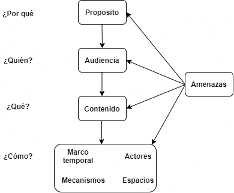
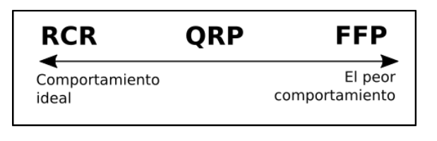
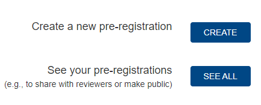
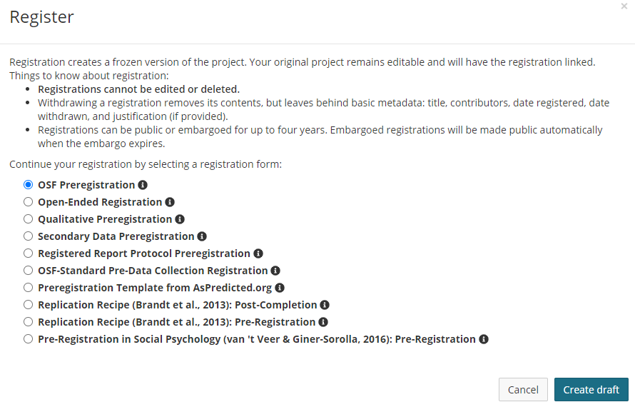
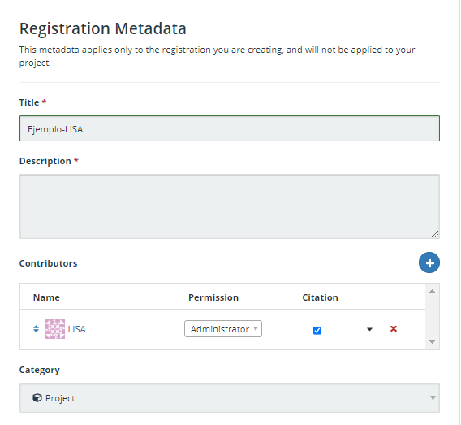

2 Diseño transparente
Uno de los principios que guía el quehacer científico es el escepticismo organizado (Merton 1973). Ningún hallazgo se acepta porque sí, sino que los científicos deben demostrarle a otros miembros de la comunidad científica que sus hallazgos son válidos. En orden de lograr esto es que se han desarrollado varios tipos de herramientas como los indicadores de impacto, la revisión por pares o las convenciones para el reporte de análisis estadístico. Sin embargo, casos como los de Diderik Stapel han dejado al descubierto que este tipo de herramientas pueden no ser suficientes para asegurar la credibilidad de los hallazgos científicos.
Diderik Stapel fue un investigador en el campo de la psicología social. Su carrera se caracterizó por una trayectoria ejemplar: entre 1995 y 2015 publicó aproximadamente 150 artículos en revistas científicas, algunas de las más prestigiosas (e.g. Science). También, fue galardonado con el premio a la trayectoria académica por la Sociedad de Psicología Social Experimental (SSEP, por sus siglas en inglés). Stapel llegó a ser una figura reconocida en su área, sin embargo, todo cambió el año 2011 cuando se confirmó que gran parte de sus artículos contenían datos inventados. La investigación final de su caso determinó que más de 50 de sus artículos eran fraudulentos (Carey 2011). De hecho, Stapel figura dentro de los diez investigadores con más artículos retractados (58) en Retraction Watch, una plataforma que se dedica a sistematizar y mantener una lista actualizada sobre retracciones de artículos.
A efectos de este escrito, lo más destacable es que Stapel cometió mala conducta académica durante más de 15 años. ¿Cómo fue esto posible? ¿cómo ninguno de sus colegas, alumnos o coautores se dio cuenta de sus malas prácticas? La respuesta tiene que ver con el concepto central de este capítulo: por la falta de transparencia durante el proceso de investigación. Stapel se caracterizaba por hacer el trabajo solo y “a puertas cerradas”, es decir, nadie más que él tenía acceso a los datos brutos, ni tampoco a la ejecución de las pruebas estadísticas. Generalmente, sólo compartía con sus colegas los datos procesados y con los análisis ya efectuados. A raíz de esta forma de trabajo es que se abría la oportunidad para que Stapel inventara datos a su conveniencia. Como nadie más colaboraba con el procesamiento de datos, ni tampoco parecía extraño que así fuera, Stapel pudo sostener una trayectoria académica destacable en base a la falta de transparencia.
El ejemplo de Stapel es solo una forma de poner en discusión la importancia de la transparencia en el proceso de investigación. Siguiendo esta línea, este capítulo busca presentar una primera aproximación, tanto teórica como práctica, sobre la transparencia en la investigación social. El objetivo es que investigadoras e investigadores de las ciencias sociales empíricas se introduzcan en la temática de la transparencia, así como también que conozcan las principales herramientas que se están utilizando para adoptarla.
2.1 Sobre la transparencia
La transparencia es un concepto multidimensional. (Elliott 2020) propone entender la transparencia en torno a cuatro preguntas: ¿por qué?, ¿quién? ¿qué? y ¿cómo? (ver Figura 2.1). Cada una de estas preguntas se relaciona a una dimensión. La primera pregunta (¿por qué?) se refiere a las razones y propósitos por los cuales es necesario adoptar la transparencia; la segunda pregunta (¿quién?) apunta a la audiencia que está recibiendo la información; la tercera pregunta (¿qué?) hace alusión al contenido que es transparentado y la cuarta pregunta (¿cómo?) consiste en cuatro dimensiones distintas sobre cómo adoptar la transparencia: actores, mecanismos, tiempo y espacios. También, esta taxonomía estipula una dimensión sobre las amenazas que podrían afectar a las iniciativas que busquen promover la transparencia. A raíz de estas dimensiones podemos comprender qué tipo de prácticas y situaciones caben dentro del concepto de transparencia.

Basándonos en esta taxonomía, presentaremos una propuesta sobre qué se entiende por transparencia en las ciencias sociales y cómo podemos adquirir prácticas orientadas a este principio. Nuestra propuesta es entender la transparencia como la apertura pública del diseño de investigación, lo que incluye todo tipo de información importante para la ejecución del estudio, desde las hipótesis hasta el plan de análisis. Esto permitirá que las personas que lean los hallazgos de investigación (ya sean científicos o la ciudadanía) puedan evaluar la credibilidad de estos y descartar la influencia de prácticas cuestionables de investigación. Para llevar a la práctica esta propuesta, presentaremos la elaboración de preregistros como una de las principales herramientas que contribuyen a hacer público el diseño, además de otras que complementan su uso.
2.2 ¿Por qué?
La pregunta del por qué es necesario avanzar hacia la transparencia encuentra su respuesta en la existencia de prácticas de investigación que merman la credibilidad de los hallazgos científicos. A modo de entender qué es lo problemático de ciertas prácticas, es que (Steneck 2006) propone el concepto de Conducta Responsable de Investigación (RCR, por sus siglas en inglés) como un ideal que engloba prácticas éticas e íntegras dentro de la investigación científica (ver Figura 2.2). Según este autor, la distinción entre la ética y la integridad recae en que la primera tiene que ver con seguir principios morales dentro de la investigación (e.g. usar consentimientos informados), en cambio, la segunda está más relacionada con el seguimiento de códigos de conductas y estándares profesionales (Abril Ruiz 2019).

Las prácticas de investigación se pueden evaluar en un continuo que representa cuánto adhieren los investigadores a los principios de integridad científica (Steneck 2006). La Figura 2.3 esquematiza esta idea mostrando dos extremos, donde a la izquierda está el mejor comportamiento (RCR) y a la derecha el peor comportamiento (FFP). Las FFP son una abreviación en lengua inglesa para referirse a Fabrication, Falsification, Plagiarism (Invención, Falsificación y Plagio), también conocidas como mala conducta académica. En el medio del continuo están las prácticas cuestionables de investigación (QRP, por sus siglas en inglés) las cuales refieren a las “acciones que violan los valores tradicionales de la empresa de investigación y que pueden ser perjudiciales para el proceso de investigación” (National Academies of Science 1992 en Steneck 2006, 58). Las QRP se caracterizan porque tienen el potencial de dañar la ciencia, en tanto las FFP la dañan directamente.

La mala conducta académica implica la violación de los principios de integridad científica. Esto se relaciona con el falseamiento de datos de cualquier forma: invención de datos, alteración de gráficos o tablas, entre otros. El caso de Diderik Stapel presentado en la introducción de este capítulo es un ejemplo que cabe dentro del concepto de mala conducta académica. Según la literatura, la prevalencia de este tipo de prácticas no es alta (e.g. Fanelli 2009; John, Loewenstein, y Prelec 2012), sino que más bien son casos aislados (ver Abril Ruiz 2019, 23-128 para una revisión). En contraste, las QRP han demostrado ser más prevalentes.
2.2.1 Prácticas cuestionables de investigación (QRP)
Existen una serie de estudios que han intentado medir directamente la prevalencia de estas prácticas a través de encuestas. (Fanelli 2009) hizo un metaanálisis que tenía por objetivo sistematizar los resultados de estudios que hasta esa fecha habían abordado las prácticas de investigación desde encuestas cuantitativas. Los resultados mostraron que un 1.97% de investigadores había inventado datos al menos una vez (FFP) y que un 33.7% había realizado alguna vez una QRP como “borrar puntos de los datos basados en un sentimiento visceral”. Unos años más tarde, (John, Loewenstein, y Prelec 2012) efectuaron otro estudio similar, demostrando que un 36.6% de quienes participaron alguna vez habían practicado alguna QRP. En detalle, analizando los porcentajes práctica a práctica los resultados muestran que el 50% de los psicólogos encuestados alguna vez reportaron selectivamente estudios que apoyaran sus hipótesis; un 35% alguna vez reportaron resultados inesperados como esperados; y un 2% alguna vez reportó datos falsos. Este estudio ha sido replicado en Italia (Agnoli et al. 2017), en Alemania (Fiedler y Schwarz 2016) y en Brasil (Rabelo et al. 2020).
Más recientemente, han emergido estudios similares en otras áreas disciplinarias. Por ejemplo, a través de encuestas online (Makel et al. 2021) logran constatar que existe una prevalencia considerable de las QRP en el campo de investigación educacional. De los participantes de la muestra, un 10% admitió haber rellenado datos faltantes (NA’s) y un 67% señaló alguna vez haber omitido ciertos análisis de manera intencional. Siguiendo el mismo método, en el campo de la investigación comunicacional se ha encontrado evidencia parecida: 9% de los encuestados señala haber imputado datos faltantes sin reportarlo, un 34% declaró alguna vez haber excluido casos extremos de forma arbitraria y un 60% señala no haber reportado análisis con variables clave que no funcionaron. Del mismo modo, en los estudios cuantitativos sobre criminología existe un uso extendido de las QRP: un 87% de la muestra de (Chin et al. 2021) ha utilizado múltiples QRP, siendo el reporte selectivo de resultados el más común (53%). Por último, fuera del área de las ciencias sociales, pero siguiendo la misma línea, (Fraser et al. 2018) también encuentran evidencia a favor de la existencia de distintas QRP en el campo de la ecología y evolución.
Los estudios mencionados arriba corresponden a la evidencia existente sobre la medición de QRP a través de encuestas. A modo de resumen, la Tabla 2.1 adaptada del trabajo de (Chin et al. 2021) agrupa la información que hemos revisado (y más), ordenándose por prácticas, campos de estudio y los artículos correspondientes a cada campo de estudio. Los números dentro de las casillas representan el porcentaje de prevalencia de cada práctica reportado por los participantes del estudio, y entre paréntesis el número de casos de la muestra. Los guiones significan que este estudio no incluyó esa práctica en el cuestionario.
Como se observa en la Tabla 2.1, las encuestas sobre QRP han incluido varias prácticas relativas al tratamiento y análisis de los datos. No obstante, consideramos que existen tres términos que, en su mayoría, logran sintetizar esta tabla y que están relacionados a la transparencia en los diseños de investigación. Estas son: 1) los sesgos de publicación, 2) el p-hacking y el 3) HARKing.
Sesgo de publicación
El sesgo de publicación ocurre cuando el criterio determinante para que un artículo sea publicado es que sus resultados sean significativos, en desmedro de la publicación de resultados no significativos. Un ejemplo ilustrativo que usan (Christensen, Freese, y Miguel 2019) para explicar esta práctica es el cómic xkcd titulado Significant. Este cómic (Figura 2.4) muestra cómo es que un hallazgo de investigación sufre del sesgo de publicación. Al publicarse únicamente el resultado significativo e ignorándose los otros 19 no significativos, cualquier lector tendería a pensar que efectivamente las gominolas verdes causan acné, cuando probablemente sea una coincidencia. El trabajo de (Rosenthal 1979) fue de los primeros en llamar la atención respecto de esta práctica, adjudicando el concepto de file drawer problem (en español: problema del cajón de archivos), el que hace alusión a los resultados que se pierden o quedan “archivados” dentro de un cuerpo de literatura. Desde ese estudio en adelante varios autores han contribuido con evidencia empírica sobre el sesgo de publicación. Por ejemplo, el estudio de (Franco, Malhotra, y Simonovits 2014) logra cuantificar esta situación encontrando que los resultados nulos tienen un 40% menos de probabilidades de ser publicados en revistas científicas, en comparación a estudios con resultados significativos. Es más, muchas veces los resultados nulos ni siquiera llegan a ser escritos: más de un 60% de los experimentos que componen la muestra del estudio de (Franco, Malhotra, y Simonovits 2014) nunca llegaron a ser escritos, en contraste con el 10% de resultados significativos.

El principal problema del sesgo de publicación es que puede impactar en la credibilidad de cuerpos enteros de literatura. Por ejemplo, en economía se han hecho varios metaanálisis que han buscado estimar el sesgo de publicación en distintos cuerpos de literatura (e.g. Brodeur et al. 2016; Vivalt 2015; Viscusi 2014). Uno de los trabajos más concluyentes es el de (Doucouliagos y Stanley 2013), quienes efectúan un metaanálisis de 87 artículos de metaanálisis en economía. En este trabajo encuentran que más de la mitad de los cuerpos de literatura revisados sufren de un sesgo “sustancial” o “severo”. Si bien en economía se ha avanzado mucho en este tipo de estudios, también a partir del desarrollo de distintos métodos de detección, se ha podido diagnosticar el sesgo de publicación en importantes revistas en sociología y ciencias políticas (Gerber y Malhotra 2008a, 2008b).
P-hacking
Otra práctica bastante cuestionada es el p-hacking. El p-hacking suele englobar muchas de las prácticas que vimos en un inicio, especialmente las que refieren al manejo de datos: excluir datos arbitrariamente, redondear un valor p, recolectar más datos posterior a hacer pruebas de hipótesis, entre otras. Lo que tienen todas estas prácticas en común y lo que define el p-hacking es que se da cuando el procesamiento de los datos tiene por objetivo obtener resultados significativos. Si el sesgo de publicación afecta la credibilidad de un cuerpo de literatura, el p-hacking afecta a la credibilidad de los artículos mismos, ya que al forzar la significancia estadística la probabilidad de que en realidad estemos frente a un falso positivo aumenta. Un trabajo que da sustento a esta idea es el de (Simmons, Nelson, y Simonsohn 2011), quienes calculan la posibilidad de obtener un falso positivo (error Tipo I) de acuerdo con el nivel de grados de libertad que son utilizados por parte de los investigadores. El resultado principal es que a medida que aumenta el uso de grados de libertad, la posibilidad de obtener un falso positivo aumenta progresivamente.
El p-hacking también contribuye a sesgar cuerpos enteros de literatura. Para diagnosticar esto se ha utilizado una herramienta denominada p-curve, la cual “describe la densidad de los p-values reportados en una literatura, aprovechando el hecho de que si la hipótesis nula no se rechaza (es decir, sin efecto), los p-values deben distribuirse uniformemente entre 0 y 1” (Christensen, Freese, y Miguel 2019, 67.). De esta manera, en cuerpos de literatura que no sufran de p-hacking, la distribución de valores p debería estar cargada a la izquierda (siendo precisos, asimétrica a la derecha), en cambio, si existe sesgo por p-hacking la distribución de p-values estaría cargada a la derecha (asimetría a la izquierda). (Simonsohn, Nelson, y Simmons 2014) proponen esta herramienta y la prueban en dos muestras de artículos de la Journal of Personality and Social Psychology (JPSP). Las pruebas estadísticas consistieron en confirmar que la primera muestra de artículos (que presentaban signos de p-hacking) estaba sesgada, en cambio la segunda muestra (sin indicios de p-hacking), no lo estaba. Los resultados corroboraron las hipótesis, esto es: los artículos que presentaban solamente resultados con covariables resultaron tener una p-curve cargada a la derecha (asimétrica a la izquierda).
HARKing
Por último, pero no menos importante, está la práctica del HARKing. El nombre es una nomenclatura en lengua inglesa: Hypothesizing After the Results are Known, que literalmente significa establecer las hipótesis del estudio una vez que se conocen los resultados (Kerr 1998). El principal problema de esta práctica es que confunde los dos tipos de razonamiento que están a la base de la ciencia: el exploratorio y el confirmatorio. El objetivo principal del razonamiento exploratorio es plantear hipótesis a partir del análisis de los datos, en cambio, el razonamiento confirmatorio busca plantear hipótesis basado en teoría y contrastar esas hipótesis con datos empíricos. Como señala (Nosek et al. 2018), cuando se confunden ambos tipos de análisis y se hace pasar un razonamiento exploratorio como confirmatorio se está cometiendo un sesgo inherente, ya que se está generando un razonamiento circular: se plantean hipótesis a partir del comportamiento de los datos y se confirman las hipótesis con esos mismos datos
2.3 ¿Qué? y ¿Quién?
Preguntarse por el qué es básicamente cuestionarse sobre lo que se está poniendo a disposición del escrutinio público. Dentro de la literatura sobre ciencia abierta, son varios los contenidos que pueden ser transparentados. Por ejemplo, la apertura de los datos es una alternativa que, ciertamente, contribuye a hacer un estudio más transparente (Miguel et al. 2014). Al estar los datos abiertos al público, la posibilidad de escrutinio por parte de las audiencias es mayor. Otro ejemplo es la idea de disclosure, la cual se refiere a la declaración que hacen los investigadores respecto a si la investigación cuenta con conflictos de interés o si está sesgada de alguna manera. En base a esta idea, recientemente han emergido propuestas cómo las de (O’Boyle, Banks, y Gonzalez-Mulé 2017) que, además de la declaración de conflicto interés, llaman a adoptar declaraciones relacionadas a las QRP. Básicamente declarar si se ha cometido QRP o no durante el transcurso de la investigación. No obstante, la apertura pública de los diseños de investigación es, sin duda, la práctica que mejor representa la transparencia en el último tiempo.
Como hemos revisado anteriormente, existe una emergente preocupación en las ciencias sociales respecto a la credibilidad de los hallazgos científicos y la influencia que pueden tener las QRP. En disciplinas como la psicología la apertura de los diseños de investigación ha sido la principal herramienta ante el diagnóstico que una parte considerable de los hallazgos eran irreproducibles o irreplicables (Motyl et al. 2017; Wingen, Berkessel, y Englich 2020; Camerer et al. 2018). Ante un diagnóstico similar en sociología (Breznau et al. 2021), en ciencias de la gestión (Byington y Felps 2017) y en economía (Gall, Ioannidis, y Maniadis 2017), por dar algunos ejemplos, también se ha reconocido la apertura del diseño de investigación como una herramienta importante para avanzar hacia la transparencia. A razón de esto, es que nuestra propuesta se focaliza en la apertura de los diseños de investigación y el uso de preregistros.
Además de preguntarse por los contenidos que se transparentan, también es relevante hacer un alcance respecto al quién. Esto es tener en consideración quiénes van a recibir la información que sea transparentada. En principio, los hallazgos de la investigación científica son un bien público -o están pensados para serlo-. Si bien en algunos países o áreas especificas del conocimiento el financiamiento de la ciencia es por parte de privados, la investigación en ciencias sociales en Chile se financia con los impuestos de los habitantes. Organismos como la Agencia Nacional de Investigación y Desarrollo de Chile (ANID), quienes están encargados de la administración de fondos para la ciencia, tienen un rol público, por lo que los hallazgos no solo sirven para alimentar el avance del conocimiento dentro de la academia, sino que también son insumos relevantes para los tomadores de decisiones y/o para cualquier ciudadano que se podría beneficiar de esos hallazgos.
En consiguiente, cualquier tipo de información que sea transparente es un insumo más para que distintos tipos de audiencias puedan beneficiarse de hallazgos más creíbles y robustos. Ya sean investigadores, tomadores de decisión o la ciudadanía.
2.4 ¿Cómo?
Una buena forma de introducir el cómo adoptar la transparencia son las Transparency and Openess Promotion (TOP) Guidelines_ (Guías para la Promoción de la Transparencia y la Accesibilidad). Las TOP Guidelines son una iniciativa del Centro para la Ciencia Abierta (COS, por sus siglas en inglés) que busca fomentar la ciencia abierta a partir de la adopción de distintos principios. Su objetivo es que tanto los investigadores como las revistas científicas adhieran a prácticas transparentes. Los principios van desde temas de citación, hasta la replicabilidad (ver el detalle sobre esta propuesta en https://osf.io/9f6gx/). Si bien esta es una iniciativa que incluye principios que escapan del enfoque de este capítulo, es un buen punto de partida ya que permite situar la transparencia en el diseño de investigación y el uso de preregistros como parte de una red de principios más grandes a instalar en la ciencia. Además, permite dar cuenta que ya existe un conjunto de actores preocupados por temáticas de ciencia abierta, que han reconocido la transparencia en los diseños de investigación como un principio importante por adoptar. En lo que sigue, revisaremos cómo los preregistros logran fomentar la transparencia en los diseños de investigación.
2.4.1 Preregistros
Los preregistros son una marca temporal sobre las decisiones del diseño, el método y el análisis de un artículo científico y se suelen hacer antes del levantamiento de datos (Stewart et al. 2020). Básicamente, preregistrar un estudio implica que un grupo de investigadores dejarán por escrito una pauta de investigación, la cual seguirán cuando desarrollen la investigación, especialmente la recopilación y el análisis de los datos. El objetivo del preregistro es reducir el margen de flexibilidad que tienen los investigadores a la hora de analizar los datos. El que exista una guía sobre qué hipótesis probar y qué análisis realizar hace menos probable que los científicos recurran en prácticas como el sesgo de publicación, p haking o el HARKing.
Como vimos, el sesgo de publicación se trata de publicar selectivamente los resultados de investigación: resultados que no hayan sido significativos, o hipótesis que “no funcionaron” simplemente se omiten. Sin embargo, cuando existe un documento como un preregistro, el cual deja estipulado claramente las hipótesis que deben ponerse a prueba y los análisis que se emplearán para ello, se torna más difícil reportar selectivamente los resultados. Dicho de otra forma, cuando existe una pauta a la cual apegarse, la discrecionalidad en el reporte de los resultados disminuye.
En el caso del p-hacking, el efecto del preregistro es parecido. El p-hacking consiste en abusar de las pruebas estadísticas para obtener resultados significativos. “Abusar” en el sentido de buscar toda vía posible para obtener un valor p que confirme las hipótesis planteadas. El hecho de preregistrar el plan de análisis y el procesamiento que se le efectuará a las variables permite evitar este tipo de búsqueda intencionada: como hay una guía que seguir, cualquier desviación debe ser justificada. En esta misma línea, un preregistro evita el HARKing ya que las hipótesis están previamente planteadas y no es posible cambiarlas una vez que se han visto los resultados. En suma, el plantear un registro a priori de la investigación, disminuye la flexibilidad que suele dar paso a las QRP.
Existen resquemores respecto del uso de preregistros de los que es preciso hacerse cargo. Una de las principales preocupaciones es que el uso de preregistros tendería a coartar la creatividad y la producción de conocimiento exploratorio (Moore 2016). La lógica es que, como cada parte de la investigación debe ser registrada detalladamente previo a la recopilación, no queda espacio para la espontaneidad durante el análisis de datos. Sin embargo, más que inhibir la investigación exploratoria, el objetivo de preregistar un estudio es separar la investigación confirmatoria (pruebas de hipótesis) y la exploratoria (generación de hipótesis) (Nosek et al. 2018). En ese sentido, es posible la investigación exploratoria bajo el modelo de preregistros, solo que hay que especificarla como tal.
Una segunda creencia es que realizar un preregistro añade un nivel de escrutinio mayor del necesario, es decir, como se conoce cada detalle, la investigación se vuelve un blanco fácil de críticas. Sin embargo, la situación es todo lo contrario (Moore 2016). Por ejemplo, haber preregistrado un plan de análisis para una regresión logística binaria con datos que originalmente eran ordinales hará más creíble los resultados, ya que quienes evalúen la investigación tendrán pruebas de que el nivel de medición no se cambió solo para obtener resultados significativos. Una tercera idea en torno a los preregistros es que conllevan una gran inversión de tiempo y energía. Si bien es cierto que se añade un paso más al proceso de investigación, el avance en la temática ha logrado que existan una variedad de plantillas que hacen el proceso más rápido y eficiente. Desde una lógica racional, el tiempo que toma este paso nuevo en la investigación es un costo bajo en contraste a los beneficios que trae.
La característica más importante de los preregistros es que sean elaborados previo al análisis de datos y deseablemente previo a su recopilación. Este requisito es lo que permite asegurar la credibilidad de los resultados, ya que si no hay datos que alterar, entonces las probabilidades de que ocurra una QRP son básicamente nulas. Generalmente, para las ciencias médicas o la psicología experimental (disciplinas donde cada vez se usan más los preregistros), esto no suele ser un problema ya que se utilizan diseños experimentales. Estos se apegan al método científico clásico: se plantean hipótesis basadas en la teoría, se diseña un experimento para probar esas hipótesis y luego se recopilan y analizan los datos para ver si dan soporte a las hipótesis planteadas. Sin embargo, en muchas disciplinas de las ciencias sociales los diseños experimentales son una pequeña fracción del conjunto de la literatura [e.g. según (Card, DellaVigna, y Malmendier 2011) en 2010, solo un 3% de los artículos en las mejores revistas de economía eran experimentales], y lo que prima son los diseños observacionales con datos secundarios. A diferencia de los estudios experimentales, en los estudios con datos preexistentes se afecta el principal componente de credibilidad de los preregistros. Nada puede asegurar que los datos fueron analizados antes de la escritura del preregistro y que, por ejemplo, las hipótesis se están planteando una vez conocidos los patrones significativos (HARKing). De ahí que nace la pregunta sobre la posibilidad de utilizar preregistros en estudios con datos preexistentes.
En la literatura sobre preregistros se han discutido los desafíos que implica preregistrar estudios que utilicen datos preexistentes (e.g. Editors 2014). Existen posturas que proponen que, en realidad, no existe una forma creíble para preregistrar este tipo de estudios (Christensen y Miguel 2018). No obstante, otras posturas han profundizado en las situaciones en las que aún es posible preregistrar estudios con datos elaborados previamente. (Burlig 2018) propone tres escenarios donde el preregistro de datos observacionales es valioso. El primero es, básicamente, cuando los investigadores que diseñaron la investigación generan sus propios datos, en este caso, los investigadores sí pueden elaborar un preregistro previo a la recolección de datos. El segundo escenario se da cuando se preregistra un estudio que tiene como objeto de interés un suceso que aún no ha ocurrido, lo que se conoce como estudios prospectivos. Por ejemplo, un grupo de investigadores puede estar interesado en el efecto que tendrá la introducción de una ley en las prácticas sociales, o el efecto de un tratado en las variaciones del PIB. Para esos casos, el preregistro aún mantiene su validez original ya que, si bien los datos ya existen, no es posible hacer los análisis antes del preregistro porque el evento de interés no ha ocurrido. El tercer escenario ocurre cuando los datos existen, pero no están abiertos al público. En estos casos, es la accesibilidad lo que determina la credibilidad del preregistro. Por ejemplo, el grupo de investigadores que elaboraron los datos pueden establecer que serán accesibles con previo contacto y que se solicitará un preregistro. Por ende, en orden de analizar los datos, los investigadores interesados deberán elaborar un preregistro para utilizar los datos.
Conforme a lo anterior, (Mertens y Krypotos 2019) proponen dos prácticas para asegurar la credibilidad de un preregistro con datos secundarios. Primero, que el grupo de investigadores que analiza los datos sea distinto e independiente de quien propuso el diseño de investigación y segundo, que el equipo realice sintaxis de análisis con datos simulados, con tal de demostrar que las hipótesis ya existían previas a acceder a los datos. Estas propuestas muestran que el requisito sobre la temporalidad del preregistro puede.
La recomendación más transversal y a la vez simple para preregistrar análisis con datos secundarios, es ser sincero y claro respecto a lo que se ha hecho y lo que no (Lindsay 2020; Nosek et al. 2018). Por ejemplo, reportar si es que se ha leído el reporte descriptivo sobre la base de datos o si se tiene conocimiento de algún tipo de patrón de los datos. Es preciso transparentar cualquier tipo de aproximación a los datos previo haberlos analizado. Para lograr este nivel de detalle y ser eficiente con los tiempos y la comunicación hacia otros investigadores, es que existen plantillas predeterminadas para preregistrar distintos tipos de artículos en diferentes situaciones. En la siguiente sección presentaremos las plantillas más usadas.
2.5 Herramientas para los diseños transparentes
Nuestra principal apuesta para promover la transparencia en los diseños de investigación son los preregistros, por lo que es a lo que le dedicaremos más espacio de esta sección. De todos modos, también revisaremos un par de herramientas que pueden complementar el uso de preregistros. Esperamos que, posterior a esta sección, el lector pueda ser capaz de utilizar estas herramientas para sus investigaciones.
2.5.1 Plantillas de preregistro
En la práctica, preregistrar un artículo es básicamente sintetizar la información importante sobre nuestra investigación en una plantilla estandarizada y alojar ese documento en un lugar público. Por lo que el primer paso para elaborar un preregistro es elegir la plantilla correcta. Existen plantillas estandarizadas que están estructuradas de tal forma que son útiles para preregistrar estudios de cualquier disciplina, así como también existen plantillas dedicadas a una disciplina o a situaciones particulares. En este apartado presentaremos plantillas bajo cuatro categorías: a) plantillas genéricas, b) plantillas para experimentos y previas a recolección de datos, c) plantillas para datos existentes/secundarios, c) plantillas para estudios de replicación y d) plantillas para registered reports. Además de proveer una descripción de cada una, orientaremos al lector para elegir una plantilla de acuerdo al tipo de investigación que está desarrollando.
El Open Science Framework (OSF), que en español se traduce como un marco de referencia para la ciencia abierta, actúa cómo una herramienta y un repositorio que alberga las plantillas que trataremos en esta sección (y más). Para ver todas las plantillas disponibles en OSF hacer clic en el siguiente enlace: https://osf.io/zab38/wiki/home/.
2.5.1.1 Plantillas Genéricas
Las plantillas genéricas son aquellas que pueden ser utilizadas independientemente de las características del estudio, ya que suelen incluir campos que abordan distintos tipos de situaciones (e.g. si un estudio es experimental o observacional). Acá revisaremos dos plantillas genéricas, la plantilla estándar de AsPredicted, y la plantilla estándar de OSF.
AsPredicted
La plantilla de AsPredicted es quizás una de las más conocidas para hacer preregistros, dado que está estandarizada y puede ser utilizada en cualquier disciplina. Recomendamos utilizarla cuando lo que se busque es optimizar tiempo y energías. La plantilla cuenta solamente con nueve preguntas clave que aplican a cualquier tipo de artículo. Esta plantilla la podemos encontrar tanto en OSF, como en la página de AsPredicted, en este caso, mostraremos cómo es el proceso en la página original.
Partimos por entrar a la página de AsPredicted, donde veremos algo similar a la Figura 2.5. Acá se nos da la opción de crear un preregistro, de ver los que ya hemos hecho (si es que ese es el caso) y también una breve descripción de AsPredicted. A grandes rasgos, la página nos dice que AsPredicted es una plataforma que busca facilitar el preregistro de estudios por parte de los investigadores a través de nueve simples preguntas. La página genera un documento .pdf y una URL asociada. También, cuenta cómo funciona el preregistro. Básicamente, un autor elabora un preregistro de un estudio y los coautores reciben un mail para aprobar ese preregistro. Una vez aprobado por todos los autores, el preregistro queda alojado en la plataforma de manera privada, y no cambia hasta que un autor decida hacerlo público. Además, en caso de que el estudio entre en revisión por pares, se puede enviar una versión anónima del preregistro. Por último, nos entrega una recomendación sobre qué hacer en el caso de que el proceso de investigación no haya podido apegarse totalmente a lo predicho.

Para elaborar un preregistro debemos hacer click en el rectángulo azul que dice Create. Una vez hecho eso, nos pedirá una dirección de email para continuar. Cuando ingresemos un email, nos enviará un enlace al email que hayamos ingresado, con ese enlace podremos comenzar el preregistro. Una vez hayamos entrado en el enlace, veremos la plantilla de preregistro. Lo primero que aparece es una sección donde debemos escribir los emails de los autores colaboradores del estudio. También, nos da la opción de añadir otros emails además del que hemos introducido. Una vez pasada esta parte, ya nos encontramos con las preguntas del preregistro, que son las siguientes:
- Recogida de datos. ¿Se han recogido ya datos para este estudio?
- Hipótesis. ¿Cuál es la pregunta principal que se plantea o la hipótesis que se pone a prueba en este estudio?
- Variable dependiente. Describa la(s) variable(s) dependiente(s) clave especificando cómo se medirán.
- Condiciones. ¿Cuántos y qué condiciones se asignarán a los participantes?
- Análisis. Especifique exactamente qué análisis realizará para examinar la pregunta/hipótesis principal.
- Valores atípicos y exclusiones. Describa exactamente cómo se definirán y tratarán los valores atípicos, así como su(s) regla(s) precisa(s) para excluir las observaciones.
- Tamaño de la muestra. ¿Cuántas observaciones se recogerán o qué determinará el tamaño de la muestra?
- Otros. ¿Hay algo más que quiera preinscribir?
- Nombre. Poner un título a este preregistro de AsPredicted Finalmente. A efectos de registro, indíquenos el tipo de estudio que está preinscribiendo.
Las preguntas son bastante autoexplicativas, pero no está de más entregar algunos detalles adicionales. En la pregunta de recolección de datos, las opciones son tres: “Sí, se han recolectado datos”, “No, no se han recolectado datos” y “Es complicado”. Es importante mencionar que, en esta plantilla, la respuesta de que se han recolectado datos no es válida, por lo que si se está llevando a cabo un estudio con datos secundarios hay que responder “Es complicado” y en la pregunta 8 de la plantilla especificar por qué este preregistro sigue siendo válido pese a que los datos son preexistentes. Otro detalle importante es que cada pregunta está pensada para ser respuesta en aproximadamente una oración. Esta plantilla tiene el objetivo de ser lo más eficiente posible, por lo que, en general, se recomienda que todo el documento no pase de los 3200 caracteres. Otro detalle que especificar es que la pregunta acerca del tipo de estudio que se está preregistrando también es semicerrada, tenemos las opciones de: “Proyecto de clase”, “Experimento”, “Encuesta”, “Estudio observacional” y “Otro”. Es responsabilidad de quien hace el preregistro el seleccionar la opción que más se asemeje a su situación. Por último, es importante señalar que el preregistro, al menos en la página de AsPredicted, solo puede ser rellenado en inglés, por lo que en caso de utilizar otro idioma solicitará traducirlo.
OSF Estándar
La plantilla estándar de OSF también es de carácter general y busca abarcar distintas situaciones y tipos de estudios. La diferencia que tiene con la plantilla de AsPredicted es que contiene más preguntas y más detalladas. Por ejemplo, contiene preguntas relativas a en qué momento específico se está efectuando el preregistro (i.e antes de recopilar los datos, antes de cualquier observación humana a los datos, antes de acceder a los datos, entre otros) o si se harán transformaciones de las variables y su nivel de medición. La plantilla puede verse en este enlace: https://osf.io/preprints/metaarxiv/epgjd/. A continuación, veremos el inicio del proceso para registrar en OSF, el cual sirve tanto para la plantilla estándar como para otras que veremos más adelante.
El primer paso es acceder a la sección específica de preregistros de la página de OSF, la cual se encuentra en el siguiente enlace: https://osf.io/prereg/ (para usar este servicio es necesario tener una cuenta). Si entramos al enlace, la apariencia de la página será algo similar a la Figura 2.6. Seleccionemos Start a new preregistration, le damos un nombre al proyecto y hacemos click en Continue. En la página siguiente, podemos ver que hemos creado un proyecto nuevo en OSF, el cual nos da la opción de preregistrarlo haciendo click en el botón New registration.

En la Figura 2.7 podemos ver dos cosas. Primero, la descripción de lo que está haciendo OSF al comenzar un nuevo preregistro, lo que en pocas palabras es una versión no modificable del proyecto al momento que hacemos el preregistro. En otras palabras, es una versión “congelada” del proyecto en OSF. Segundo, también se aprecia una serie de opciones para preregistrar, estas son las plantillas que mencionamos anteriormente. OSF nos ofrece distintas plantillas de acuerdo con el carácter que tiene nuestro estudio.

El primer paso es escoger la plantilla de acuerdo a la situación en la que nos encontremos. En este caso, seleccionamos la plantilla estándar de OSF. Una vez hayamos hecho eso, será necesario llenar los metadatos del estudio (e.g. Figura 2.8). Esta sección es transversal a todas las plantillas y consiste en registrar el título, descripción, contribuyentes, entre otras cosas que ayudan a identificar el proyecto.

Una vez hayamos rellenado los campos correspondientes a los metadatos, podemos rellenar la plantilla de preregistro. Con los campos rellenados podremos proceder a preregistrar nuestro proyecto.
2.5.1.2 Plantillas para diseños experimentales y previas a recolección de datos
Considerando que el sentido original de un preregistro es que sea elaborado previo a la recolección y análisis de los datos, en principio cualquier plantilla genérica podría servir. Por ejemplo, la plantilla estándar de OSF ofrece preguntas detalladas que refieren al uso de diseños experimentales (i.e. cuáles son las condiciones de tratamiento o quiénes están al tanto de las manipulaciones experimentales del estudio). Sin embargo, OSF ofrece una vía alternativa para preregistrar estudios previo a la recolección de datos a través de la plantilla “OSF-Standard Pre-Data Collection pre-registration”. Esta plantilla es un complemento de la plantilla estándar y se utiliza solamente si es que el preregistro original está archivado en un documento. Esto quiere decir que, en el caso de que el equipo de investigación no haya usado el flujo de preregistro de OSF, sino que ya cuenta con un archivo que alberga el preregistro del estudio, entonces puede escoger esta plantilla de complemento para no efectuar todo el proceso de nuevo.
Esta plantilla agrega algunas preguntas cruciales sobre la recopilación de datos, siendo las siguientes:
- ¿Ha comenzado la recogida de datos para este proyecto?
- No, la recopilación de datos no ha comenzado
- Sí, la recopilación de datos está en curso o se ha completado
- ¿Ha mirado los datos?
- Sí
- No
- Otros comentarios
2.5.1.3 Plantillas para datos secundarios
En el último tiempo se ha comenzado a considerar cómo es que investigadores de las ciencias sociales empíricas que trabajan con datos preexistentes pueden, de todas maneras, preregistrar sus estudios para asegurar la credibilidad de sus hallazgos. Si bien OSF cuenta con una plantilla tipo para este tipo de situaciones (ver en https://osf.io/x4gzt/), nosotros recomendamos la plantilla de Mertens y Krypotos (2019) dada la simpleza y exhaustividad de sus preguntas. La plantilla de Mertens y Krypotos (2019) se puede ver en el siguiente enlace: ttps://osf.io/p26rq/.
Esta plantilla está dirigida a investigadores que usen datos secundarios. Hace más simple el proceso de preregistro al enfocarse en las preguntas que se asemejan realmente a la situación del investigador que trabaja con grandes encuestas o datos administrativos, lo cual es muchas veces el caso en disciplinas como sociología, ciencias políticas o economía.
Esta plantilla cuenta con las siguientes diez preguntas:
¿Cuál es la hipótesis que se investigará?
¿Cómo se operacionalizarán las variables cruciales?
¿Cuál es la fuente de los datos incluidos en los análisis?
¿Cómo se obtendrán estos datos?
¿Hay algún criterio de exclusión de los datos?
¿Cuáles son los análisis estadísticos previstos?
¿Cuáles son los criterios para confirmar y desconfirmar las hipótesis?
¿Se han validado los análisis con un subconjunto de datos? En caso afirmativo, facilite los archivos de datos y la sintaxis de los mismos.
¿Qué se sabe sobre los datos que podría ser relevante para las hipótesis probadas?
Facilite un breve calendario para los diferentes pasos del prerregistro.
Como podemos ver, además de los campos que se pueden encontrar en cualquier plantilla como la especificación de las hipótesis del estudio o los criterios de exclusión de datos, esta plantilla hace preguntas relativas al nivel de conocimiento previo de los datos. Por ejemplo, en la pregunta 4 solicita especificar la fuente de los datos. Como son datos secundarios, esto implica detallar cómo se accederá o serán solicitados los datos: si es que es necesario rellenar algún formulario o contactar a alguien en específico para obtener acceso. También, en la pregunta 9 se solicita describir cualquier conocimiento de algún patrón en los datos que sea relevante para la pregunta de investigación (e.g. la media o la mediana de una variable). Estos son ejemplos de preguntas que hacen esta plantilla útil para los investigadores que trabajen con datos preexistentes y que quieran preregistrar sus estudios.
2.5.1.4 Plantillas para estudios de replicación
Tratar en extenso qué es y cómo se hace un estudio de replicación escapa de los objetivos de este capítulo, sin embargo, es una práctica de la ciencia abierta que no podemos dejar fuera ya que también cuenta con una plantilla para prerregistro. Replicar un estudio significa regenerar los hallazgos de un estudio, siguiendo sus hipótesis y plan de análisis, pero con datos distintos.
OSF ofrece dos plantillas para investigadores que tienen el objetivo de replicar un estudio. La primera es una plantilla para estudios de replicación previo a su ejecución, la cual incluye una serie de preguntas relativas al estudio original, por ejemplo, qué efecto se está buscando replicar, por qué es importante replicarlo o en qué área geográfica fue conducido el estudio original. Esta plantilla se puede ver en el siguiente enlace: https://osf.io/4jd46/. La segunda plantilla es para estudios de replicación que ya han sido completados. En este caso, las pvreguntas están relacionadas a los hallazgos del estudio de replicación, por ejemplo, cuál fue el efecto obtenido en la replicación y si se considera que este efecto logra replicar los resultados originales o no. El enlace para esta plantilla se puede encontrar en este enlace: https://osf.io/9rp6j/.
2.5.1.5 Plantillas para registered reports
Cómo veremos en la siguiente sección, los registered reports son un modelo alternativo de publicación donde el diseño del estudio pasa por un proceso de revisión por pares, a diferencia del modelo tradicional donde el documento que pasa por revisión por pares es el artículo finalizado. La plantilla que ofrece OSF es para estudios que han sido aceptados en la revisión por pares en una revista académica que cuenta con el modelo de registered reports. El objetivo de esta plantilla es poder dejar un registro público sobre el artículo en proceso, por lo que la plantilla de preregistro consta de, básicamente, una sección para el título del artículo, la fecha de aceptación, el manuscrito y archivos complementarios. Esta plantilla se puede ver en este enlace: https://osf.io/gm36s/.
2.6 Otras herramientas
Sí bien los preregistros son una de las herramientas que más ha ido tomando protagonismo para promover la transparencia, existen otras. Específicamente, queremos mencionar dos de ellas: el modelo de registered reports (en español, informes registrados) y la transparency checklist (en español, lista de transparencia).
2.6.1 Registered Reports
El modelo de registered reports es una alternativa al modelo tradicional de publicación. Consiste en que el artículo atraviesa una revisión por pares en etapas tempranas de la investigación, específicamente previo a la recolección de datos. Esta práctica tiene por objetivo que el estudio sea evaluado por su innovación y calidad del diseño de investigación, más que por resultados impactantes (Chambers et al. 2015). Además, busca dejar sin efecto prácticas como el sesgo de publicación, p-hacking y HARKing, ya que no solamente existe una marca temporal que avala el diseño de investigación del estudio (como es el caso de un preregistro), sino que también existe un grupo de científicos anónimos que están de acuerdo con que el artículo es un aporte al conocimiento (Chambers 2013; Nosek y Lakens 2014; Marsden et al. 2018).
Los registered reports tienen dos características principales (Marsden et al. 2018). Primero, un manuscrito con la justificación del estudio, lo que incluye una introducción, revisión de antecedentes y una pregunta de investigación, dando la posibilidad de una aceptación preliminar (IPA, por sus siglas en inglés In principle acceptance). La segunda característica es que el IPA no puede revocarse en base a los resultados del estudio, esto evita que trabajos con resultados no significativos no sean publicados y así combatir el sesgo de publicación. Relacionado a ambas características, los informes registrados pasan por dos etapas de revisión, la primera es la del manuscrito, siendo este el determinante de se el estudio se acepta o no, y la segunda revisión que se da posterior a terminar la recolección y análisis de datos. El modelo, en comparación al sistema tradicional de publicaciones, se puede ver en la Figura 2.9.

Para enviar un artículo bajo el modelo de registered reports, primero se debe tener en conocimiento cuáles son las revistas que cuentan con este tipo de revisión. El Centro para la Ciencia Abierta cuenta con una lista actualizada de revistas aquí. Una vez escogida una revista, el proceso no es tan distinto al método convencional, en el sentido de que los investigadores envían su manuscrito con la justificación del estudio y este puede ser aceptado o rechazado por el editor, ya sea directamente o después de la corrección de algunos comentarios. Una vez se cuenta con el IPA y se efectúa la revisión en la segunda etapa, los revisores se aseguran de que el estudio ha seguido el plan de análisis inicialmente planteado y si sus conclusiones tienen sentido de acuerdo a los datos y resultados obtenidos, así como también que toda desviación del plan original sea debidamente justificada (Stewart et al. 2020). Desviaciones muy sustanciales y/o que no sean debidamente justificadas pueden conllevar el rechazo del artículo, aunque puede seguir el proceso en el método convencional de publicación (Stewart et al. 2020).
2.6.2 Transparency Checklist
La transparency checklist es una herramienta complementaria elaborada por Aczel et al. (2020) que busca acompañar el proceso de reportar un estudio, contribuyendo a que estos sean más transparentes. Esta lista ha sido elaborada específicamente para investigadores de las ciencias sociales y del comportamiento que trabajan con datos primarios, aunque puede ser útil para otros enfoques y disciplinas. La lista consta de 36 items divididos en cuatro categorías: preregistro, método, resultados y discusiones y accesibilidad de datos, donde cada ítem refiere a alguna característica de un reporte transparente, preguntando si ha sido efectuada o no, es decir, las respuestas posibles de cada ítem son “Sí”, “No” y “N/A”. Existe una versión más corta de 12 items, los cuales son los siguientes:
Sección de preregistro:
Antes de analizar el conjunto completo de datos, se publicó un prerregistro con sello de tiempo en un registro independiente de terceros para el plan de análisis de datos.
El estudio fue registrado…
- antes de que cualquier dato fuera recolectado
- después de que algunos datos fueron recolectados, pero antes de explorarlos
- después de que todos los datos fueron recolectados, pero antes de explorarlos
- después de explorar los datos, pero antes de que cualquier análisis estadístico fuera efectuado
- después de efectuar algunos análisis estadísticos, pero no todos
- en otro momento, explicar:
- El análisis estadístico previsto para cada pregunta de investigación (esto puede requerir, por ejemplo, información sobre la unilateralidad de las pruebas, los criterios de inferencia, las correcciones para pruebas múltiples, los criterios de selección de modelos, las distribuciones previas, etc.).
Sección de método
El manuscrito describe completamente…
la justificación del tamaño de la muestra utilizado (por ejemplo, un análisis de potencia a priori).
el diseño, los procedimientos y los materiales del estudio para permitir una réplica independiente.
las medidas de interés (por ejemplo, la amabilidad) y sus operacionalizaciones (por ejemplo, un cuestionario que mide la amabilidad).
¿algún cambio en el prerregistro (como cambios en los criterios de elegibilidad, en los límites de pertenencia al grupo o en los procedimientos experimentales)?
Sección de resultados y discusión
El manuscrito…
- distingue explícitamente entre la “confirmación” (es decir, preestablecido) y “exploratorio” (es decir, no preestablecidos).
Sección de disponibilidad de datos, código y materiales
Se han hecho públicas las siguientes…
los datos (procesados) en los que se han basado los análisis del manuscrito.
todo el código y el software (que no esté protegido por derechos de autor).
todas las instrucciones, los estímulos y los materiales de las pruebas (que no estén protegidos por derechos de autor).
El manuscrito incluye una declaración sobre la disponibilidad y localización de todos los elementos de la investigación, incluidos los datos, materiales y códigos pertinentes para su estudio.
Tanto la versión completa de 36 items, como la recortada de 12 están disponibles para rellenar en línea. Aquí se puede encontrar la lista online, es una aplicación de uso simple, además que permite generar el reporte final de manera automática.
Anexos
| Dimensión | Práctica |
|---|---|
| Diseño y procesamiento | Ignorar ciertos aspectos de los requerimientos de las personas participantes. |
| Pasar por alto el uso de datos cuestionables o de interpretaciones cuestionables que otros hacen. | |
| Cambiar partes de un estudio como respuesta a la presión de una fuente de financiación | |
| Eliminar observaciones de los análisis basados en la intuición de que eran inexactos. | |
| Redondear un valor p (por ejemplo, reportar que un p-value de 0,054 es menor a 0,05) | |
| Eliminación, adición o alteración de datos después de pruebas de hipótesis. | |
| Supresión selectiva o adición de variables. | |
| Invertir la dirección o reformular hipótesis para respaldar los datos | |
| Redacción, reporte y publicación | Ampliar de manera innecesaria la bibliografía de un estudio. |
| Tergiversar los logros de la investigación. | |
| Exagerar la importancia y la relevancia práctica de los resultados. | |
| Retener detalles de la metodología de investigación (e.g. no reportar todas las variables dependientes de un estudio) | |
| Retener resultados de la investigación (e.g. no presentar datos que contradicen una propia investigación previa). | |
| Establecer publicaciones o brindar apoyo a publicaciones que no cumplen el proceso de control de calidad de la investigación | |
| Publicar los mismos datos o resultados en dos o más publicaciones. | |
| Selectivamente reportar estudios que "funcionaron". | |
| Reportar hallazgos inesperados como previstos desde el principio. | |
| Afirmar que los resultados no se ven afectados por variables demográficas cuando uno no está realmente seguro (o sabe que lo hacen). | |
| Citación y autoría | Manipular la autoría o denigrar el papel de otros investigadores en las publicaciones. |
| Asignar inapropiadamente los crédios de autoría. | |
| Volver a publicar partes sustanciales de publicaciones propias anteriores, incluidas las traducciones, sin citar debidamente el original ("autoplagio"). | |
| Citar de forma selectiva para mejorar los propios resultados o para complacer a los editores, los revisores o los colegas. | |
| Usar ideas de otros sin obtener permiso o dar crédito | |
| Uso no autorizado de información confidencial en relación con la propia investigación. | |
| Relaciones con otros | Permitir que los patrocinadores pongan en peligro la independencia en el proceso de investigación con el fin de introducir sesgos. |
| Acusar a un investigador de conducta indebida u otras infracciones de forma maliciosa. | |
| Retrasar u obstaculizar inadecuadamente el trabajo de otros investigadores. | |
| Emplear la experiencia profesional propia para alentar a que se incumpla la integridad de la investigación. | |
| Ignorar supuestos incumplimientos de la integridad de la investigación cometidos por terceros o encubrir reacciones inadecuadas a conductas indebidas. | |
| No divulgar adecuadamente la participación en empresas cuyos productos se basan en la investigación de uno. | |
| Relaciones con estudiantes, sujetos de investigación o clientes que pueden ser interpretadas como cuestionables. | |